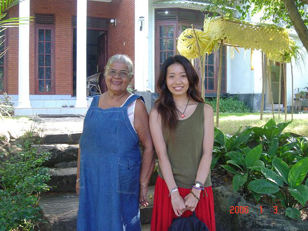
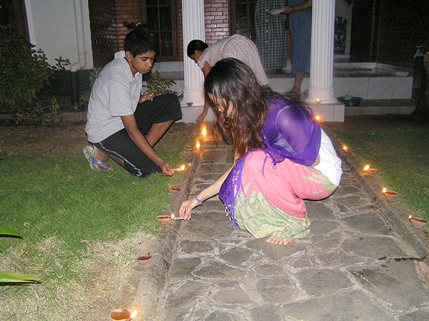
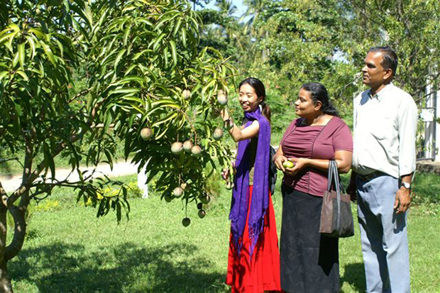
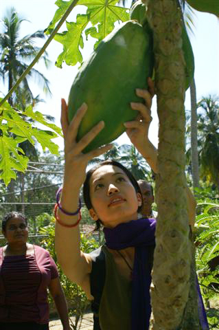
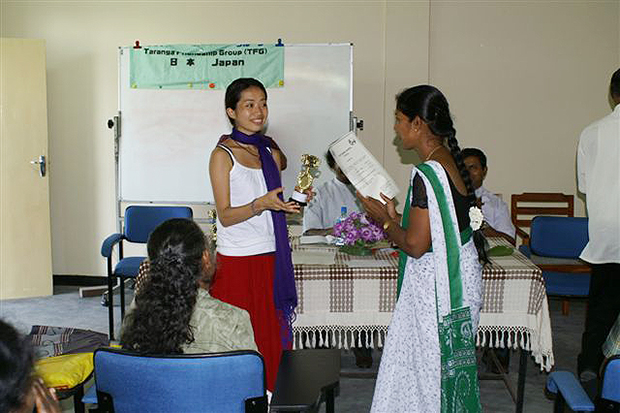

 優しいホストマザーと！拡大写真 |
沢山のおいしいカレー♪拡大写真 |

「今回は、自分の好きなアジア圏で普通の旅行では味わえない１歩踏み込んだ体験がしてみたかったのと、英会話をもっと上達させたかったので、このプログラムを選びました。
| この国では思っていた以上に外国人が珍しく、どこにいっても大変歓迎されたので、逆にちょっと戸惑ってしまいました。 でも、日常ではありえないことなので、日本人として恥ずかしくないよう振舞おうとすることは、とても良い経験になりました。 初めてのホームステイだったので、緊張しましたが、私に無理がないよう常に気遣っていただいたので、とても快適に過ごせました。 |
低開発村視察 |
 元旦の仏教セレモニーの準備 |
英会話が上達したことだけではなく、ご飯を作るのを手伝ったり、スリランカの習慣について知ったり、行事に参加できたことがなによりも楽しかったです。 |

今回マーネルさんのお宅にホームステイをさせていただいたことは本当に幸運だったと思っています。
マーネルさんは本当に素晴らしい先生です。英語の先生として、一人の女性として、日本に暮らしたことがある外国の方として、本当に貴重な意見がたくさん聞けました。
学生のころに習うような教材に沿ったレッスンではなく、レッスンを通じて、スリランカのこと、日本をどう思うかということ、色々なことに対する価値観などをお話しできたのがとても楽しかったです。
書いた日記を見せる宿題は、会話の中ではうまく伝えられなかったことなどを伝えることができたし、日記で使った単語は次の会話に生かす機会が多く、大変勉強になりました。 また、その時の記録がとても良い思い出になっています。
(このぐらいやらないと上達しないと思うので不満ではないのですが、学生生活から遠く離れた私には毎日のレッスンと宿題をこなすのが結構ハードでした)
| スリランカは、とにかく動物が多いのに驚かされました。 また、行く前はスリランカの人は昼寝をしたりして、のんびり暮らしているイメージでしたが、実際は、朝早くから夜遅くまでよく働き、とても勤勉だとも思いました。 物を大事にし、つつましく暮らしているのが印象的でした。 |
 |
 巨大パパーヤの実！ |
スリランカが途上国であることは間違いありません。 その反面、貧しい人や津波の被害にあい、いまだに不自由な生活をしている人、どんなにがんばっても海外に行くことなんてできない人たちもいるということを痛感して、日本に生まれたことで得られた自由というものをとても強く感じました。 |
一人でスリランカにいることで、不安になる時もありましたが、そんな時は空いっぱいの星や蛍や山を見ていると心が穏やかになって気持ちが落ちつきました。
スリランカにはステキなホテルやかわいい洋服や雑貨がたくさんあるので、ちょっとリッチにショッピングをしたり、リゾートホテルにのんびり泊まるような滞在も今度はしてみたいなと思っています。
留学プログラムは、もう少し英語が上達した時に、さらにレベルアップを図るために利用できたらよいと思います。
持って行けば良かったものは、耳かき（意外と見つかりません）、ビューラー（こちらの人は目がパッチリしているので、自分もパッチリさせたくなる）、虫さされのかゆみ止め薬。とにかく蚊がかゆい。虫除けスプレーはこちらのスーパーなどで見かけるのですが、さされた後のかゆみ止めがあまりないので、日本から持っていけば良かったと思いました。
そして、日本の宗教や文化についてもう少しちゃんと理解して、話せるようになっておけば良かったで す。
出発前の私の質問にいつも的確なお返事をいただき、とても助かりました。
本当に貴重な経験をさせていただき、ありがとうございました。」
 WTIの研修生発表会に参加 |
研修生の皆さんと！ |